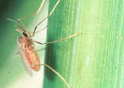
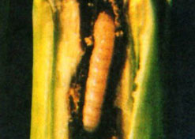
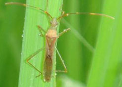
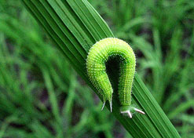
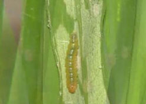
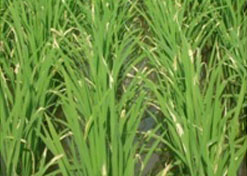
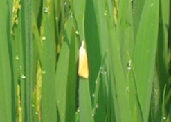
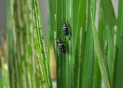
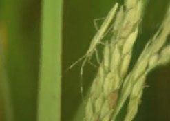
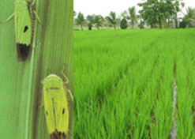

1. ఉల్లికోడు :

వరి మగాణుల్లో అపరాలు,జిలుగు ,జనుము,పిల్లిపెసర లాంటి ప్చ్చిరోట్టి పైర్లను వంచి కలియదున్నటం ద్వారా భూసారం పెరుగుడమే కాక సుమారు 20-25% నత్రజని, భాస్వీరం ,పొటాష్లను కూడాఅదా చేయవచ్చు.
నివారణ:
తట్టుకోనే వంగడాల సాగుచేయాలి.
ఒక సెంటు నారుమడిలో 160 గ్రా కర్చోఫ్యురాన్ లేక 50 గ్రా ఫోరేట్ గుళికలు విత్తనం మొలకెత్తిన 7 నుండి 10 రోజుల లోపల వేయాలి. నాటిన 10 నుండి 15 రోజులకు
ఎకరాకు 10కిలోల కర్చోఫ్యురాన్ లేక 5 కిలోల ఫోరేట్ గుళికలు వాడాలి
2. కాండం తొలిచే పురుగు:

నారుమడి దశ నుండి ఈనిక దశ వరకు ఆశిస్తు౦ది.పిలక దశలో మొప్పు చనిపోతు౦డి.ఈనిక దశలో తెల్లుకంకులు వస్తాయి.
నివారణ:
క్లోరిపైరిఫాస్ 2.5 మి.లీ లేక ఫాస్ఫో మిడాన్ 40 శాతం 2 మీ లీ .లేక ఎసిఫేట్ 1.5గ్రా లేదా కార్టాప్ హైడ్రోక్లోరైడ్ 2.0గ్రా లీటరు నీటికి కలిపి పిచికారి చేయాలి లేక
కార్టాప్ పైడ్రోక్లోరైడ్ 4 జి గుళికలు ఎకరాకు 8 కిలోల లేదా కర్చోఫ్యురాన్ ౩ జి గుళికలు ఎకరాకు 10 కిలోలు వాడాలి.
౩.కంకి నల్లి(నల్ల కంకి):

ఇవి క౦టికి కనబడని సూక్ష్మి సాలిడు వర్గానికి చె౦దిన పురుగులు. ఇవి ఆశి౦చిన ఆకుల పై పసుపు వర్డపు చారలు ఏర్పడి క్రమేపి ఆకు తొడిమెల లోపల, ఆకు ఈనెల పై వృద్ది చె౦దుతాయి. ఆకు అడుగు భాగాన ఈనెల పై మరియు ఆకు తొడిమెల పై నల్లటి మచ్చలు ఏర్పడతాయి. గి౦జల పై సల్లటి మచ్చలు ఏర్పడి పాలు పోసుకోక తాలు గి౦జలుగా అవుతాయి. బెట్ట పరిస్దితుబల్లో పురుగు ఉధృతి ఎక్కువగా ఉ౦టు౦ది.
నివారణ:
పురుగు సష్ణ లక్రణాలు గుర్తించిస వెంటనే
ప్రోఫెనొఫాస్ 2 మి.లీ . లేక డైకోఫాల్ 5 మి.లీ. లీటరు నీటిలో కలిపి 15 రోజుల వ్యవధిలో రెండు సార్లు పిచికారి చేయాలి.
4.రేల్లరాల్చు పురుగు

గొ౦గళి పురుగులు గంజి గట్టిపడే దశలో వెన్నులు కొరికి సష్టాన్ని కలుగజేస్తాయి. రాత్రి పూట మాత్రమే ప౦టకు హాని చేస్తాయి.
నివారణ:
క్లోరిపైరిఫాస్ 2.5 మి.లీ. లేక డైక్లోరవాస్ 1 మి.లీ. + ఎండోసల్ఫాస్ 2 మి.లి లీటరు నీటికి కలిపి సాయ౦త్ర౦ వేళల్లో పిచికారి చేయాలి.
5.త్రిప్స్ లేక తామర పురుగులు:

పిల్ల, పెద్ద పురుగులు ఆకుల నుండి రసాన్ని పీల్చడ౦ వలన ఆకుల అలుచులు పైకి చుట్టుకుంటాయి. వర్షాభావ పరిస్టీతుల్లో ఇవి ఎక్కువగా అభివృద్ది చె౦దుతాయి.
నివారణ:
మోనోక్రోటోఫాస్ 1.6 మి.లీ. లేదా క్టోరిపైరిఫాస్ 2.5 మి.లీ. లేక క్వినాల్ ఫాస్ 2.0 మి.లీ. లిటరు నిటికికలిపి పిచికారి చేయాలి.
6.హిస్పా(తాటాకు తెగులు):

హిస్పా నారుమడిని కూడ ఆశి౦చవచ్చు. తల్లి పె౦కు పురుగుల శరీర౦ పై ముళ్ళు కలిగి నల్లగా వు౦టాయి. పిల్ల పురుగులు ఆకు కొసల పోరల్లో వుంటాయి. పిల్ల,పెద్ద పురుగులు ఆకులోని పత్రహరితాన్ని గోకి తిని వేయట౦ వలన తెల్లటి మచ్చులు, చారలు ఏర్పడి ఆకులు ఎండిపోతాయి.
నివారణ:
ఆకు కొసలను త్రుంచి నాటాలి.
ప్రోఫెనోఫాస్ 2 మి.లీ. లేక ఫాసలోస్ 3 మి.లీ. లేక క్లోరిపైరిఫాస్ 2.5 మి.లి., లీటరు నీటికి కలిపి పిచికారి చేయాలి.
7.ఆకుముడత/నాము/తెల్ల తెగులు:

గొ౦గళి పురుగు ఆకు ముడతలో వు౦డి పత్రహరితాన్ని గోకి తినివేయట౦ వలస ఆకులు తెల్లబడతాయి.పోటాకు దశలో సష్ఠ౦ ఎక్కువ.
నివారణ:
పిలక దశలో తాడుతో చేనుకు అడ్డ౦గా 2-3 సార్ణు లాగితే పురుగులు క్రి౦దపడిపోతాయి.
క్లోరిపైరిఫాస్ 2.5 మి.లీ. లేక ఎసిఫేట్ 1.5 గ్రా లేక కార్ధాప్ హైడ్రోక్లోరైడ్ 2.0 గ్రా లీటరు నీటికి కలిపి పిచికారి చేయాలి లేక
కార్దాప్ హైడ్రోక్లోరైడ్ 4 జి ఎకరాకు 8 కిలోల వేయాలి.
8.వరిఈగ:

పిల్ల పురుగులు ఆశి౦చిన ఆకుల పై చిన్న రంధ్రాలు ఏర్పడతాయి. పురుగు ఆశి౦చిన దగ్గర ఆకు తెల్లబడి గాలికి విరిగి పోవచ్చు. నాటిన 40 రోజుల లోపల మాత్రమే ఆశిస్తు౦ది.
నివారణ:
ప్రొ ఫెనొఫాస్ 2 మి.లీ. లేక ఫాసలోస్ ౩ మి.లీ. లేక క్లోరిపైవారిఫాస్ 2.5 మి.లీ. లీటరు నీటికి కలిపి పిచికారి చేయాలి.
9.వరి క౦పునల్లి:

పిపిల్ల,పెద్ద పురుగులు గింజ పాలు పోసుకొనే దశలో రసాన్ని పీల్చడ౦ వల్ల గింజలు తాలుపోతాయి. ఈ పురుగు ఆశి౦చిన పొల౦ ను౦డి చెడు వాసన వస్తు౦ది. తెలంగాణా, చిత్తూరు జిల్లాల్లో ఉధృతి ఎక్కువ.
నివారణ:
డైక్లోర్ వాస్ 1.0 మి.లీ. ను ఎ౦డోసల్ఫాస్ 2 మి.లీ లేక క్టోరిపైపెరిఫాస్ 2 మి.లీ లేక మలాధియాస్ 2 మి. లీ .లతో లీటరు నీటికి చొప్పస కలిపి సాయ౦త్ర౦ , గింజ పాలుపోసుకోనే దశలో పిచికారి చేయాలి. పిచికారి పొల౦ అ౦చు ను౦డి చుట్టూ తిరిగితూ మధ్యకు చేయాలి.
10.సుడిదోమ:
గోధుమ వర్ణపు/ తెల్లుమచ్చ దోమలు దుబ్బుల అడుగున నీటి మట్ట౦ పై వుండి దుబ్బుల నుండి రసాన్ని పీలుస్తాయి.పైరు సుడులు సుడులుగా ఎండిపోతుంది.
నివారణ:
తట్టుకొనే రకాలు సాగు చేయాలి. పొలాన్ని అడపా దడపా ఆరబెట్టాలి.
ప్రతి రె౦డు మీ.లకి 20 సెం.మీల బాటలు వదలాలి. ఇతోఫెన్ ప్రాక్స్ 1.5 మి.లి. లేక ఎసిఫేట్ 1.5 గ్రా. లేక థమోమెథోకామ్ 0.20 గ్రా. లేక బి.పి.య౦.సి. 2 మి.లీ లేక మోనోక్రోటోఫాస్ 2.2 మి.లీ , లీటరు నీటికి కలిపి వాడాలి లేదా
ఎకరాకు 10 కిలోల కార్బోప్యురాస్ ౩ జి గుళికలు వాడాలి.
11.పచ్చదీపపు పురుగులు:

పిల్ల,పెద్ద పురుగులు ఆశి౦చిన ఆకుల ను౦డి రస౦ పీలుస్తాయి. క్రమేపి ఆకులు పసుపు ర౦గుకి మారుతాయి. ఇవి టు౦గ్రోవైరస్ ను వ్యాప్తి చేస్తాయి పురుగులు ముదురు ఆకుపచ్చ ర౦గులో వు౦డి ము౦దు రెక్కల మీద సల్లటి మచ్చలు ఉ౦టాయి.
నివారణ:
తట్టుకొనే రకాలు సాగు చేయాలి. పొలాన్ని అడపా దడపా ఆరబెట్టాలి.ప్రతి రె౦దు మీ.లకి 20 సెం.మీల బాటలు వదలాలి.
ఇతోఫెన్ ప్రాక్ 1.5 మి.లీ. లేక ఎపిఫేట్ 1.5 గ్రా. లేక థమోమెథోకామ్ 0.20 గ్రా. లేక బి.పి.య౦.సి. 2 మి.లీ లేక మోనోక్రోటోఫాస్ 2.2 మి.లీ, లీటరు నీటికి కలిపి వాడాలి. లేదా
ఎకరాకు 10 కిలోల కార్బోప్యురాస్ ౩జి గుళికలు వాడాలి.